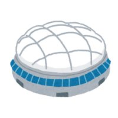
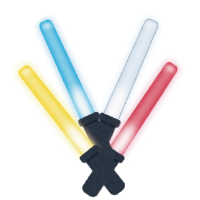

東京ドームってどんなとこ？
東京ドームは東京ドームシティの中にある 日本初の全天候型多目的スタジアム。 プロ野球・セントラルリーグの 読売ジャイアンツが専用球場としているが 1988年の開業以降、野球はもちろんのこと コンサートや展示会など多種多様な ビッグイベントが開催されています。 屋根付きの球場なので天候に左右されず 安心して使用することができます。

1988年3月18日 面積は約47000㎡ 最大収容人数50000人 野球観戦時46000人
東京ドームの使用料 税抜きで1700万円 観客を入れないと 650万円だそうです。

東京ドームで 一番最初に コンサートを行ったのは ミック・ジャガーです。
限られた人しか 立てない芝生の上で思いっきり 寝っ転がって東京ドームを 真下から見上げませんか？
おすすめ
回転ドアではなくその隣の 普通の扉が開いていれば そこから出てみてください。 風が強すぎて面白いです。 ※吹き飛ばされないように注意してください。